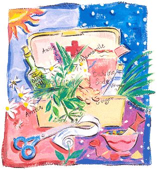
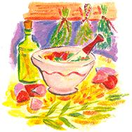

Simple cures for the stings, scrapes and sprains of summer.
You've planned this vacation for what seems an eternity, scrimping and saving over the long, cold winter so that you might spend your hard-earned two weeks lounging on the beach or canoeing your favorite rivers or discovering new byways or backcountry trails. As you drive down the road you know with each passing mile that you've put more distance between yourself and that windowless office, that glaring computer screen or that grouchy boss who's always breathing down your neck.
You arrive at your destination to find the perfect mix of sun and scenery. Life is good, you think, until... you step barefoot on broken glass or sprain an ankle or a bee plants its stinger in your behind. While no doubt nuisances, these common vacation woes don't have to mean the end of your good time, particularly with some advance preparation. What follows are simple suggestions for a vacationer's first-aid kit. You can store the items in a lunchbox and take them with you wherever and whenever you travel.
Let's start with the bee or wasp sting you didn't count on but now have. Two simple remedies are effective, depending on the type of sting. If it's a bee sting, prepare a paste of baking soda and water and apply to the area. Bee stings contain formic acid, so an alkaline baking soda (sodium bicarbonate) helps to neutralize them. If on the other hand you've been stung by a wasp, reach for some vinegar. Vinegar contains acetic acid and will help to neutralize the wasp's more alkaline sting. No vacationer's first-aid kit should be without baking soda and vinegar.
While less hazardous than bees and wasps, mosquitoes and other bugs can leave you itchy and annoyed. To ward them off, add a bottle of citronella oil to your first-aid kit. The oil comes from citronella grass, which grows in Java, Ceylon, Central America and parts of Florida. It's used in many commercial cosmetic and spray products. Dab a little on your face and neck, plus exposed areas of arms and legs. The lemon-like aroma has the ability to repel many would-be assailants from your skin.
Whether you've cut your finger on fishing line or fallen off your bike and scraped your leg, you'll need a reliable antiseptic. One of the best natural antiseptics is tea-tree oil, an extract from an Australian tree known botanically as Melaleuca alternifolia. Pick up a bottle at your local health store. Tea-tree oil can be ap plied, undiluted, directly on a cut. It can also be used for canker or other mouth sores by placing a few drops in a cup of water and using as a rinse.
Some words of caution: Since a number of companies market this product, you need to be careful to select a quality brand. Be sure to read the label. Look for tea-tree oil that contains no more than 15% cineole (also called eucalyptol), since higher amounts can irritate the skin. Also, the terpineol content should be above 30% to ensure the product is effective (terpineol is an aromatic alcohol compound found in many essential oils). You should be able to smell tea-tree oil, even in its diluted form. If you can't, you may be wasting your money on a brand with an insufficient oil content. Finally, be aware that some people are allergic to teatree oil; if you're a first-time user, apply a few diluted drops before administering the product full strength.
Your traveler's first-aid kit should also prepare you to deal with sprains and sore muscles. Include in your arsenal some "red oil," which you'll have to prepare ahead of time. Red oil contains St. John's wort (Hypericum perferatum), an herb best known for its antidepressant properties. Less well-known is St. John's ability to relieve muscle soreness. Obtain some dried St. John's wort flowers and crush a cupful of them before placing in a quart of olive oil. Seal the container tightly and place in the sun for several weeks, until the mix turns a deep red color. The oil should keep in your first-aid kit for several months (discard once it starts to smell rancid).
Another effective natural remedy for sprains and sore muscles is arnica cream. Arnica is a flowering herb that grows in the American west and is identifiable by its bright yellow-orange, sunflower-like blossoms. You can buy arnica cream in a tube; most preparations contain about 15% arnica oil. Applied to the skin, it has significant anti-inflammatory properties. Test for allergy by dabbing a very tiny amount on a small patch of skin. If it gives you no problem, apply the cream to the injured area three to six times a day until the soreness subsides.
Another ill that can ruin your long-awaited vacation is motion sickness - and it can strike whether you're traveling by plane, car or boat. Tempting though they may be, avoid the common over-the-counter remedies; they may relieve nausea, but they can also cause drowsiness and dry mouth. Rather, include a bottle of 500 mg capsules of powdered ginger in your first-aid kit. You can also make ginger tea with a spoonful of finely grated ginger powder in hot water, or you can chew on a piece of candied crystallized ginger.
Just because you're on vacation doesn't mean that cold germs are also taking time off. Colds can hit you in the summer just as well as in winter - and nothing puts the damper on vacation fun faster. One of the best remedies for preventing colds or shortening their duration when they do strike is an herb called echinacea, more commonly known as coneflower. Echinacea comes from a variety of coneflower species and is sold in an array of forms, including liquids, gelcaps and hard capsules. The solid forms are the easiest to pack. The usually recommended dosage is two to eight capsules per day, but be sure to read and follow the label instructions for whatever form and brand you buy.
Unfortunately, coughs are as common to colds as mosquitoes are to hot summer nights. One of the best natural cough remedies is licorice (Glycyrrhiza glabra). Its sweet taste prompts you to swallow, and the act of swallowing can serve to suppress a cough. Some studies have shown that licorice may even dull the central cough reflex.
Bring some licorice powder along on your trips. You can brew it in a coffeemaker by placing the powder in the same place you'd put the coffee grounds. Drink several cups a day to suppress a cough. Alternatively, you can chew on the herb several times a day and swallow the juice. Incidentally, don't try to substitute the so-called "licorice sticks" you can buy in the candy section. Most of the candy stuff is merely licorice-flavored and has no real licorice content.
Of all the afflictions you may have to face on your vacation, the worst one may be traveler's fatigue. If you find that you're simply too pooped to party, try a ginseng capsule, preferably containing 100 mg to 125 mg of the extract. Even better would be to start taking ginseng supplements in the weeks before you leave for vacation, as the herb can help to build up your energy ahead of time. After all, there'll be plenty of time to collapse in a rocking chair after you get back home.
So there you have it: a vacationer's first-aid kit using sim ple but effective remedies. Take it with you on your trip. It may just save your vacation from becoming more taxing than a day at the office.
Charles Dickson teaches college chemistry and is the authorof Investigations in Biological and Pharmaceutical Chemistry (CRC Press).
|
 |
 |
|